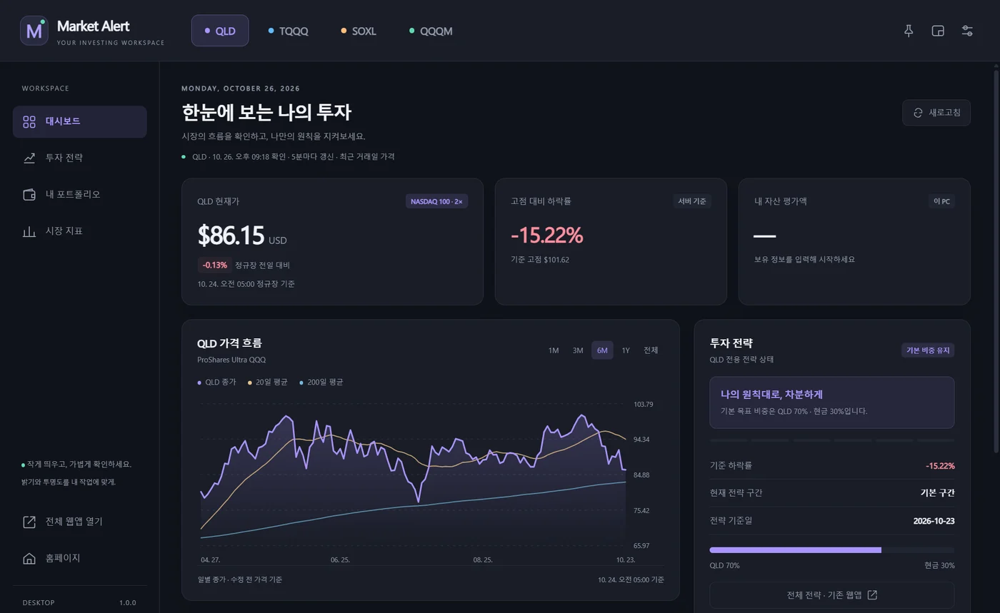
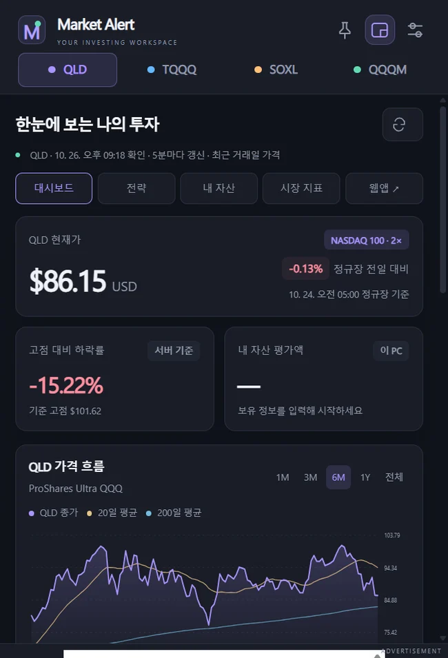

하나의 창, 네 개의 종목
QLD · TQQQ · SOXL · QQQM을 상단 탭에서 전환합니다. 종목별 데이터와 보유 기록은 서로 분리됩니다.
네 개의 ETF를 하나의 Windows 창에서.
창을 작게, 화면을 은은하게.
일상의 흐름 속에서 투자 원칙을 확인하세요.

PC 화면을 위해 다시 구성한 카드와 차트. 창 크기에 따라 자연스럽게 정렬됩니다.
QLD · TQQQ · SOXL · QQQM을 상단 탭에서 전환합니다. 종목별 데이터와 보유 기록은 서로 분리됩니다.
밝기 45–120%, 창 불투명도 35–100%. 항상 위에 표시 기능과 함께 편한 작업 환경을 만드세요.
닫기 버튼을 누르면 트레이에 남습니다. 다시 열면 마지막 종목과 설정 그대로 이어집니다.
작은 창 모드로 전환해 필요한 정보만 곁에 두세요.

Windows 10 / 11 (64비트) · 버전 1.0.0 · 빌드 1 · 약 115.6 MB
이 설치 파일 하나에 QLD · TQQQ · SOXL · QQQM이 모두 들어 있습니다. 다른 파일은 받지 않아도 됩니다.
다운로드한 .exe 파일을 실행해 설치한 뒤, 바탕 화면의 Market Alert를 여세요. 닫기 버튼은 기본적으로 트레이 보관이며, 설정 또는 트레이 메뉴에서 완전히 종료할 수 있습니다. 첫 배포본은 코드 서명이 없어 Windows에서 게시자 확인 안내가 나타날 수 있습니다.
PC 보유 기록은 이 컴퓨터에만 저장되며 모바일과 자동 동기화되지 않습니다. 시세는 최근 정규장 기준으로 표시하고 5분마다 확인합니다. 기존 계정의 모든 기능은 ‘전체 웹앱 열기’에서 이용하세요.